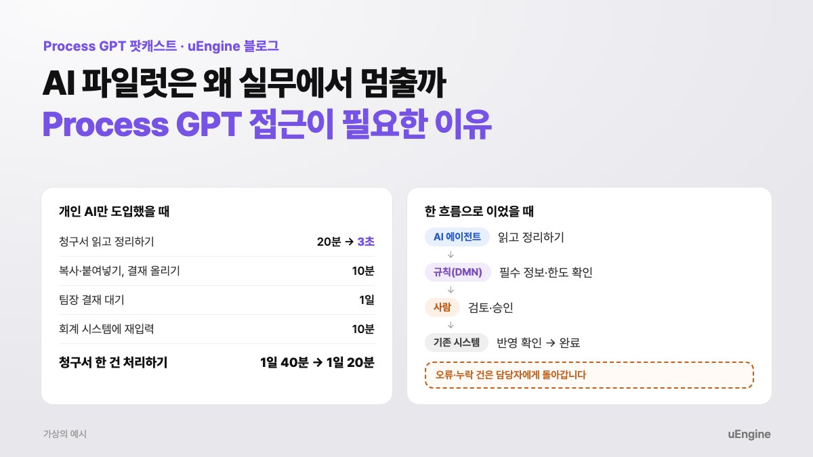

AI 파일럿은 왜 실무에서 멈출까 — Process GPT 접근이 필요한 이유

이 글은 Process GPT 팟캐스트 01화 「AI 파일럿은 왜 실무에서 멈출까」(13분 25초)의 내용을 글로 옮기고, 표와 예시를 더해 정리한 것입니다. 팟캐스트는 Process GPT 제품소개서를 바탕으로 NotebookLM이 만든 AI 음성 해설입니다.
1. 시연회의 박수, 한 달 뒤의 야근
수억 원을 들여 최신 AI를 도입했다고 상상해 보세요. 시연회에서 AI가 수백 쪽짜리 문서를 3초 만에 요약하자 박수가 쏟아집니다. 그런데 한 달 뒤 실무 부서에 가 보면 직원들은 여전히 야근을 하고, 결재는 밀려 있고, 업무 처리 속도는 도입 전과 다르지 않습니다.
많은 기업이 겪는 일입니다. AI가 문서를 요약하고 메일 초안을 써 주면 일이 끝났다고 여기기 쉽습니다. 하지만 이는 마라톤에서 100m 구간만 빨리 달린 것에 지나지 않습니다. 주방 보조가 양파를 아무리 빨리 썰어도 요리하고 서빙할 사람이 없으면 손님은 계속 기다려야 합니다.
시연과 실무는 환경부터 다릅니다. 시연은 잘 정리된 문서 하나로 하는 실험입니다. 실무에서는 부서마다 양식이 다르고, 꼭 있어야 할 항목이 빠진 문서도 들어옵니다. 무엇보다 한 사람의 작업이 끝나도 일은 다음 사람과 다음 시스템으로 넘어가야 합니다.
2. 3초 요약이 줄인 것과 줄이지 못한 것
청구서 한 건을 처리하는 과정을 가상의 숫자로 따라가 보겠습니다.
| 단계 | 구간 | AI 도입 전 | 개인 AI 도입 후 |
|---|---|---|---|
| 청구서를 읽고 거래처·금액·날짜 정리 | 작업 처리 | 20분 | 3초 |
| 정리한 내용을 복사해 그룹웨어 결재 문서에 붙여넣기 | 인계 | 5분 | 5분 |
| 결재선을 지정해 올리기 | 인계 | 5분 | 5분 |
| 팀장 결재 대기 | 의사결정 대기 | 1일 | 1일 |
| 회계 시스템에 다시 입력하고 확인 | 인계 | 10분 | 10분 |
| 청구서 한 건을 처리하기까지 | 1일 40분 | 1일 20분 |
이해를 돕기 위한 가상의 숫자입니다. 구간은 Process GPT 소개 페이지의 리드타임 구분을 따랐습니다.
AI는 20분 걸리던 일을 3초 만에 처리합니다. 그런데 청구서 한 건의 처리 시간은 1일 40분에서 1일 20분으로 줄었을 뿐입니다. 나머지 시간은 사람이 복사해 붙여넣고, 결재를 기다리고, 다른 시스템에 다시 입력하는 데 쓰입니다. 시스템 접속 장애라도 생기면 그 상태로 몇 시간을 더 기다려야 합니다.
이처럼 사람과 시스템 사이의 흐름이 끊긴 구간을 복사·붙여넣기의 늪이라고 부를 수 있습니다. 이 늪이 남아 있는 한, 개인의 작업 속도를 아무리 높여도 조직 전체의 리드타임(일이 시작돼 완료되기까지 걸리는 시간)은 줄어들지 않습니다.
개인 AI가 줄인 것은 표의 첫 행, 작업 처리 구간뿐입니다. 한 건의 처리 시간은 인계와 대기가 결정합니다.
3. 무엇을 기준으로 볼 것인가
그래서 AI를 하루에 몇 번 썼는지, 몇 명이 썼는지는 성과의 기준이 되기 어렵습니다. Process GPT가 겨냥하는 것은 업무 완료 시간, 산출물 품질, 재작업률, 운영 비용입니다. 이를 개선하려면 AI가 혼자 다 해 줄 것이라는 기대에서 벗어나, 사람과 AI, 기존 시스템을 하나의 업무 흐름에 배치해야 합니다. 식당으로 치면 주방 보조의 칼질만 빠르게 하는 것이 아니라 동선과 레시피 전체를 짜는 일입니다.
첫걸음은 업무 흐름 지도를 그리는 것입니다. Process GPT에서는 "구매 요청이 들어오면 팀장 승인을 거쳐 구매팀이 발주하는 흐름을 만들어 줘"처럼 말로 설명하면, 누가 어떤 일을 어떤 순서로 처리할지 보여 주는 지도가 만들어집니다. 이 지도는 국제 표준 업무 흐름 표기법인 BPMN으로 그려지므로 사람이 보고 직접 고칠 수 있습니다.
다만 마법은 아닙니다.
- 말로 그리는 것은 논리적인 흐름입니다. 10년 넘게 써 온 사내 시스템이 저절로 연결되지는 않습니다. 필요한 시스템은 API나 연동 도구로 연결해야 하고, API가 없는 시스템은 따로 검토해야 합니다.
- AI가 그린 지도도 사람이 꼼꼼히 검토해야 합니다.
4. 사람·AI·규칙에게 각자 잘하는 일을
지도를 그렸으면 각 단계를 누구에게 맡길지 정합니다. 똑똑한 AI에게 전부 맡기면 편할 것 같지만, 그러다 큰 사고가 날 수 있습니다. 생성형 AI의 강점인 유연함이 엄격한 업무 규칙 앞에서는 약점이 되기 때문입니다.
"법인카드로 50만 원 이상을 쓰면 반드시 팀장 승인을 받는다"는 규정이 있다고 가정합니다. AI가 맥락을 읽고 "이번 출장은 고생했으니 그냥 승인하자"라고 판단하면 안 됩니다. 이런 규칙은 AI가 아니라 규칙 도구에 맡깁니다. Process GPT는 규칙을 DMN(판단 기준을 표로 정리하는 국제 표준)의 결정표로 관리합니다. 입력이 같으면 결과도 언제나 같습니다.
| 필수 정보(거래처·금액·날짜) | 금액 | 결과 |
|---|---|---|
| 하나라도 빠짐 | 상관없음 | 담당자에게 보완 요청 |
| 모두 있음 | 50만 원 미만 | 담당자 확인 후 처리 |
| 모두 있음 | 50만 원 이상 | 팀장 승인 필요 |
청구서 판단 기준을 결정표로 옮긴 예입니다. 표의 한 행이 규칙 하나입니다.
역할을 나누면 다음과 같습니다.
- AI 에이전트: 양식이 제각각인 문서를 정리하거나 초안을 쓰는 등 맥락을 파악하는 일
- 규칙(DMN): 필수 입력값 확인이나 금액 한도처럼 답이 딱 떨어지는 판단
- 사람: 최종 승인과 모호한 예외 상황의 판단, 결과에 대한 책임
- 기존 시스템: 확정된 결과의 기록
이처럼 사람과 AI, 규칙과 시스템이 맡은 일을 하나의 흐름으로 조율하는 것을 업무 오케스트레이션이라고 합니다. 단순한 계산에까지 생성형 AI를 쓸 필요도, 고정된 규칙을 AI의 판단에 맡길 이유도 없습니다.
5. 같은 청구서를 끝까지 이어진 흐름으로
앞의 청구서 처리 과정을 Process GPT로 다시 설계하면 다음과 같습니다. 특정 고객사의 실제 데이터가 아니라 구조를 보여 주기 위한 가상의 설계 예시입니다.
4단계에서 회계 시스템 오류가 나면 업무가 담당자에게 돌아갑니다. AI가 임의로 되돌리지 않습니다.
앞의 표에서 사람이 손으로 잇던 세 구간(붙여넣기, 결재선 지정, 다시 입력하기)이 하나의 흐름으로 이어졌습니다.
앞의 표와 비교해 보세요. 복사해 붙여넣기, 결재선 지정, 회계 시스템에 다시 입력하기는 흐름 안에서 이어집니다. 팀장은 필요한 정보가 모두 정리된 승인 요청을 받습니다. 결재 대기처럼 사람이 판단하는 시간은 여전히 남지만, 어디서 얼마나 걸리는지 기록으로 확인할 수 있습니다.
예외 처리도 설계해야 합니다. 금액이 빠졌거나 회계 시스템에서 오류가 나면 Process GPT가 알아서 복구해 줄까요? 그렇게 약속하지 않습니다. 이미 외부 시스템에 반영된 것을 AI가 마음대로 되돌리면 금융 사고로 이어질 수 있습니다. 좋은 흐름 설계는 오류가 없다고 약속하는 대신, 오류가 나면 담당자에게 업무가 돌아가도록 경로를 미리 마련하는 것입니다.
6. 회사의 맥락은 지식지도로, 경험은 스킬로
AI는 우리 회사의 예산 규정이나 용어를 어떻게 알까요? 그때마다 모델을 다시 학습시키는 것은 비효율적입니다. Process GPT는 온톨로지를 활용합니다. 온톨로지는 조직의 대상, 관계, 규정을 서로 이어 놓은 지식지도입니다. 에이전트는 문서를 처리하면서 이 지식지도를 조회해 근거를 찾습니다. 사용자가 결과에 피드백을 주면 그 내용이 스킬과 규칙으로 정리되어 다음 실행에 쓰입니다.
그렇다고 오류가 0이 되지는 않습니다. 근거가 탄탄해질 뿐, 사람의 검토와 통제는 계속 필요합니다. 지식은 판단의 근거가 되고, 프로세스는 그 판단을 실행으로 이어 줍니다.
7. 도입 전에 던질 네 가지 질문
| 질문 | 확인할 것 | 청구서 예시라면 |
|---|---|---|
| 1. 어떤 결과를 바꿀 것인가 | 응답 속도가 아니라 완료 시간, 비용, 재작업률 | 접수부터 회계 반영까지 걸리는 시간, 보완 요청 비율 |
| 2. 전체 흐름이 이어져 있는가 | 사람이 복사해 붙여넣거나 다시 입력하는 구간 | 그룹웨어에 붙여넣기, 회계 시스템에 다시 입력하기 |
| 3. 누가 무엇을 맡는가 | 단계마다 사람·AI·규칙이 맡을 몫 | 읽기는 AI, 한도 확인은 결정표, 승인은 팀장 |
| 4. 운영 준비가 되었는가 | 오류와 예외 상황의 처리 경로 | 금액이 빠지거나 회계 시스템에 오류가 나면 누구에게 돌아가는가 |
도입 기간, 비용, 절감률은 업무의 복잡도와 기존 환경에 따라 달라 미리 숫자로 약속할 수 없습니다. 대표 업무 하나를 골라 작게 시작하고, 우리 환경에서 얼마나 나아지는지 측정하면서 확대하는 것이 가장 현실적입니다. Process GPT의 실행 분석은 경과 시간을 사람의 판단, 에이전트의 수행, 대기로 나눠 보여 주므로 도입 전후를 같은 기준으로 비교할 수 있습니다.
8. Process GPT에서는 이렇게 합니다
이 글에서 다룬 내용이 Process GPT의 어떤 기능에 해당하는지 정리했습니다. 링크를 누르면 제품 소개 페이지나 튜토리얼의 해당 부분으로 이동합니다.
| 이 글에서 | Process GPT 기능 |
|---|---|
| 말로 그리는 업무 흐름 지도 | 업무를 한두 문장으로 설명하면 사람과 에이전트의 역할을 레인으로 나눈 BPMN 프로세스와 단계별 입력 폼을 만듭니다. ↗ 소개 페이지에서 보기 · ↗ 튜토리얼: 대화로 프로세스 만들기 |
| 규정 문서에서 시작하기 | 규정 PDF를 읽고 단계·담당자·금액별 승인과 반려 경로를 담은 초안을 근거 문서의 쪽 번호와 함께 보여 줍니다. 사람이 승인해야 다음으로 넘어갑니다. ↗ 소개 페이지에서 보기 · ↗ 튜토리얼: 문서로 프로세스 만들기 |
| 규칙은 결정표로 | 업무 규칙을 DMN 결정표로 관리해 에이전트의 분기 판단을 명시적인 규칙으로 통제합니다. ↗ 소개 페이지에서 보기 · ↗ 튜토리얼: 비즈니스 규칙(DMN) |
| 사람의 승인과 반려 | 사람의 최종 결정이 필요한 핵심 경로에 승인 단계를 넣습니다. 반려하면 앞 단계로 되돌아가는 갈림길도 만들 수 있습니다. ↗ 소개 페이지에서 보기 · ↗ 튜토리얼: 승인과 반려 |
| AI가 맡는 단계 | 에이전트가 맡은 단계를 차례로 처리하고 결과를 단계 폼에 입력합니다. 자료에 없는 수치는 지어내지 않고 없다고 명시합니다. ↗ 소개 페이지에서 보기 · ↗ 튜토리얼: 에이전트가 맡는 단계 |
| 기존 시스템 연결 | MCP 허브에서 연결을 저장하기 전에 실제로 접속해 확인하고, 툴 단위로 권한을 주며, 되돌릴 수 없는 툴만 따로 막을 수 있습니다. API가 없어 화면만 있는 시스템은 uEngine RPA로 잇습니다. ↗ 소개 페이지에서 보기 · ↗ 튜토리얼: MCP로 외부 도구 연결하기 |
| 회사의 지식지도 | 딥 에이전트가 실행 중에 Ontology Studio로 만든 지식그래프를 탐색해 근거 조항을 인용합니다. ↗ 소개 페이지에서 보기 · ↗ 튜토리얼: 지식 베이스 |
| 피드백을 스킬로 | 같은 업무에 대한 피드백이 쌓이면 스킬 개선안을 만들어 사람의 승인을 받은 뒤 반영합니다. ↗ 소개 페이지에서 보기 · ↗ 튜토리얼: 스킬로 일하는 방법 가르치기 |
| 리드타임 측정 | 전체 경과 시간을 사람의 판단, 에이전트의 수행, 대기로 나눠 어디를 개선해야 할지 찾습니다. ↗ 소개 페이지에서 보기 · ↗ 튜토리얼: 실행 분석 |
9. 맺으며: 시험하는 조직에서 운영하는 조직으로
Process GPT가 지향하는 것은 화려한 시연이 아닙니다. 사람이 책임지고 업무를 끝까지 운영하는 구조입니다. AI를 시험만 해 보는 조직에서 AI와 함께 업무를 운영하는 조직으로 바뀌는 것입니다.
업무 흐름이 지도로 그려지고 반복 작업과 문맥 파악을 AI와 규칙이 맡게 되면, 사람의 최종 결정과 책임은 엑셀 내용을 복사해 붙여넣는 지금보다 오히려 더 무겁고 가치 있어집니다.
다음 주 회의에서 우리 팀 업무 하나를 펼쳐 놓고 네 가지 질문을 던져 보세요. 업무를 사람과 에이전트의 몫으로 나눠 보는 연습은 Agent Storming 워크숍에서, 조직 전체의 전환 계획은 AX 전환 컨설팅 교육에서 함께할 수 있습니다. 진단부터 함께하고 싶다면 변화관리까지 이어지는 AX 전환 프로그램을 살펴보세요.
먼저 직접 해 보고 싶다면 Process GPT 튜토리얼과 Process GPT 제품 소개에서 시작할 수 있습니다.
참고 자료